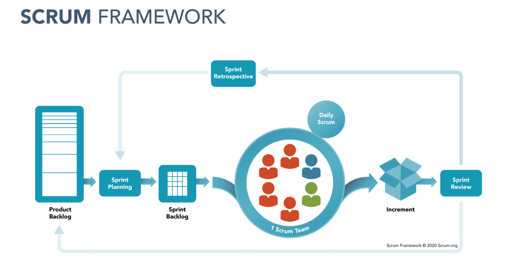

El sistema binario, también llamado sistema diádico en ciencias de la computación, es un sistema de numeración en el que los números son representados utilizando únicamente dos cifras: 0 (cero) y 1 (uno). Es uno de los sistemas que se utilizan en las computadoras, debido a que estas trabajan internamente con dos niveles de voltaje (0 apagado, 1 conectado), por lo cual su sistema de numeración natural es el sistema binario.

Las computadoras y otros dispositivos digitales usan el sistema binario para representar y procesar datos. Cada tipo de información—desde texto y números hasta imágenes y sonidos—se convierte en una serie de bits (0s y 1s) que los circuitos electrónicos pueden manipular.
El sistema binario es fundamental para realizar operaciones lógicas y aritméticas en las computadoras. Los procesadores están diseñados para realizar operaciones en binario, como sumas, restas, multiplicaciones y divisiones, así como operaciones lógicas como AND, OR y NOT.
Los datos en una computadora se almacenan en formato binario. Discos duros, SSDs, memorias RAM y otros dispositivos de almacenamiento utilizan binario para guardar información de manera eficiente y accesible.
La transmisión de datos a través de redes y medios digitales también se basa en el sistema binario. Los datos se codifican en señales digitales que representan secuencias de bits. Por ejemplo, en las redes de comunicación, los bits se convierten en impulsos eléctricos, señales ópticas o ondas de radio para su transmisión.
Las instrucciones que los procesadores ejecutan están codificadas en binario. Cada instrucción de un programa se traduce en una secuencia de bits que el procesador interpreta para realizar tareas específicas.
Además de su uso en informática, el sistema binario se utiliza en diversas aplicaciones de control y medición. Por ejemplo, en sistemas de control digital y en la programación de microcontroladores, donde los estados de un sistema pueden representarse con bits.
Las técnicas de compresión y encriptación de datos también se basan en el sistema binario. La compresión reduce el tamaño de los datos binarios para facilitar su almacenamiento y transmisión, mientras que la encriptación utiliza algoritmos binarios para proteger la información.
En el diseño de circuitos digitales y electrónicos, el sistema binario simplifica la creación de circuitos lógicos y aritméticos. Los transistores y otros componentes electrónicos se diseñan para manejar señales binarias, lo que facilita la construcción de dispositivos complejos.
Los lenguajes de programación y los sistemas operativos también interactúan con los datos en formato binario. Aunque los programadores suelen trabajar con abstracciones más altas (como variables y estructuras de datos), estos se traducen a binario para que las computadoras puedan procesarlos.
| Experiencias | Crecimiento | Aporte |
|---|---|---|
| Viajar por el mundo | aprender diferentes idiomas | Mejorar la economia |
| Conocer las profundidades del mar | leer obras literarias, novelas, etc | Facilitar el aprendizaje de las personas |
| Tener una relacion duradera | Estudiar todo lo que me llame la atencion | Protejer el medio ambiente |
Scrum es un proceso de gestión que reduce la complejidad en el desarrollo de productos para satisfacer las necesidades de los clientes. La gerencia y los equipos de Scrum trabajan juntos alrededor de requisitos y tecnologías para entregar productos funcionando de manera incremental usando el empirismo.
Scrum es un marco de trabajo simple que promueve la colaboración en los equipos para lograr desarrollar productos complejos. Ken Schwaber y Jeff Sutherland han escrito La Guía Scrum para explicar Scrum de manera clara y simple.
Scrum es simple, no es una gran colección de partes y componentes obligatorios definidos de manera prescriptiva. Scrum no es una metodología, Scrum está basado en un modelo de proceso empírico. con respeto a las personas y basado en la auto-organización de los equipos para lidiar con lo imprevisible y resolver problemas complejos inspeccionando y adaptando continuamente.
Cuando se trata de representar Scrum en muchas ocasiones se usan algunas imágenes que muestran los roles, eventos y artefactos para definir Scrum. Si solo se usan estos elementos o se define Scrum en base a estos elementos se puede estar fomentando un enfoque mecánico de Scrum o un Scrum flácido que finalmente no es Scrum. Estos tres elementos de Scrum son solo una parte de la historia
Juego terminado Estás escribiendo un correo electrónico cuando, con el rabillo del ojo, notas que una figura se acerca por tu izquierda. Terminas la frase con un punto y pulsas enviar, al mismo tiempo que giras la silla para mirar a tu visitante. Es Sam. "¿Qué pasa?" “¿Tienes un minuto?”, responde ella. "Claro. ¡Dispara!" “¿Podemos alquilar una habitación?” Asientes y te levantas, mirando alrededor, hacia las puertas de la sala de reuniones. —Fermat está libre —dices mientras señalas la esquina de la oficina. Ambos comienzan a caminar hacia allí. “¿Está todo bien?”, te preguntarás. —Sí, es algo de lo que quería hablarte —responde Sam. Ella entra en la habitación y tú la sigues. Cierras la puerta detrás de ti y enciendes la luz. Notas que Sam no ha tomado asiento en la mesa. Su lenguaje corporal se ha vuelto más extraño. Hay un silencio incómodo. Sam lo rompe. “Estoy renunciando a mi trabajo. Espero irme a finales de este mes”. Sientes que tus mejillas se ponen rojas. “¿Te vas? ¿Qué pasa?” “A partir de esta mañana acepté una oferta en otro lugar, por lo que espero terminar todo en las próximas cuatro semanas para poder comenzar allí el primero del próximo mes”. informe de erratas • discutir Machine Translated by Google Capítulo 8. Fin del juego • 148 No lo viste venir. No estás muy seguro de qué decir. Busca en tu cerebro algunas palabras. "Lo siento mucho. Avísame si necesitas algo mientras estás aquí". Sam asiente. “Lo haré”, dice. Sonríe y sale de la habitación. Te sientes estúpido al instante. ¿Por qué no le preguntaste a dónde iba? ¿Por qué iba? ¿Fue por el dinero? ¿Fue por el proyecto? ¿Y cuándo tuvo entrevistas en otras empresas cuando ha estado aquí todos los días durante los últimos meses? ¿Y no se supone que ahora debes ir y hacerle una contraoferta para intentar que se quede en la empresa? ¡Ah, pero ni siquiera preguntaste cuál era el nuevo trabajo y cuánto pagaba! Suspiras y te apoyas contra la puerta. ¿Qué deberías hacer a continuación? Si eres un gerente, esto te va a pasar. La gente siempre se irá. A veces lo verás venir, a veces no. A veces querrás que se vayan. A veces los obligarás a irse. De cualquier manera, tendrás que acostumbrarte al hecho de que habrá una rotación natural dentro de tu equipo contra la que nunca podrás ganar. En este capítulo, exploraremos todas las maravillosas formas en que las personas pueden abandonar su equipo. Y lo harán, créame. Aprenderá lo siguiente: • La gente siempre se marcha. Es un hecho de la vida. Analizaremos estudios que muestran qué tipo de rotación de personal se debe esperar y cómo puede resultar realmente beneficiosa. • Cómo saber cuándo las personas deben irse con tu bendición. A veces, las personas se van por buenas razones. ¿Cuáles son y cómo debes manejarlas? • Cómo luchar para que su personal se quede. Su mejor personal será un activo en el mercado laboral y una oferta de trabajo bien remunerada está a solo un mensaje de LinkedIn de distancia. ¿Cómo se puede intentar evitar que el personal se vaya? ¿Es posible predecirlo? • Cómo hacer que la gente se vaya. Por último, siempre habrá personas que tengan un mal desempeño y que deberá abordar. Analizaremos una forma común de abordar los problemas de desempeño: los planes de mejora del desempeño. informe de erratas • discutir ¿Estás listo para afrontar lo más difícil? ¡Comencemos! Machine Translated by Google Es normal que la gente se vaya Es normal que la gente se vaya • 149 En primer lugar, desmintamos un mito: es completamente normal que la gente abandone tu equipo, tu departamento y tu empresa. En 2018, según datos de LinkedIn, se informó [Boo18] que el sector tecnológico en los Estados Unidos tiene una tasa de rotación anual del 13,2 %, la más alta de cualquier otro sector empresarial. Sí, es incluso más alta que la del sector minorista, que fue la segunda más alta con un 13 %. Piénsalo un segundo: si tu departamento tiene 1000 empleados, para fin de año, en promedio, habrás reducido tu plantilla a 868 empleados solo por deserción. Eso es una gran cantidad de contrataciones para mantener el mismo tamaño del departamento. Como viste en ¡ Únete a nosotros!, contratar personas es un trabajo duro, así que si la gente se va, debes asegurarte de que sea por las razones correctas. Ahora bien, mis padres se quedarían sin duda sorprendidos por esa estadística. El último trabajo de mi padre antes de jubilarse le exigió dieciocho años de servicio. En este nuevo mundo en el que la permanencia en el cargo es cada vez más corta, ¿cómo podemos esperar sacar el máximo partido a la situación? ¿Cómo podemos ajustar nuestras propias expectativas y sentimientos sobre la marcha de la gente para que la situación sea lo menos dolorosa posible? La gente siempre se va a ir. Es normal y es una lástima. Léalo unas cuantas veces y reflexione. Como gerente, está condenado al fracaso si piensa que va a mantener a todos en su equipo actual indefinidamente. Solo establecerá expectativas de tal manera que se sentirá terrible cuando alguien presente su renuncia. Siéntase cómodo con el hecho de que todas nuestras carreras son Todos somos diferentes y nos motivan distintos aspectos: el desafío, la ubicación, la comodidad, el horario de trabajo, los lenguajes y marcos de programación, los amigos y las nuevas oportunidades, por nombrar solo algunos. Todos ellos pueden ser fuerzas conflictivas en las decisiones profesionales. Sin embargo, lo creas o no, la rotación puede ser buena para ti [Ash19]. Las empresas cambian todo el tiempo, especialmente si son pequeñas y crecen rápidamente. Las personas que fueron contratadas en un momento de la historia de la empresa pueden no ser las más adecuadas para la empresa en su siguiente etapa de evolución. Una rotación natural garantiza que tengas más oportunidades de contratar a personas que sean las más adecuadas para los desafíos particulares que enfrentas en ese momento. Las salidas de empleados se pueden dividir en dos grupos: • Voluntarios. Se van por voluntad propia. • Involuntarios. Los obligas a irse, generalmente por razones de rendimiento. A veces estas categorías se denominan lamentables y no lamentables. informe de erratas • discutir Claramente hay dos cosas en las que centrarse aquí: asegurarse de que aquellos que están Machine Translated by Google Capítulo 8. Fin del juego • 150 Las personas que se van voluntariamente lo hacen por razones positivas y no hay nada que puedan o deban hacer para que se queden. Analizaremos las salidas voluntarias en la primera mitad de este capítulo. La segunda razón (la salida involuntaria) es cuando tienes que despedir a alguien por alguna razón, generalmente por un mal desempeño. Como gerente, es tu responsabilidad asegurarte de que los empleados que no pueden transformarse en buenos empleados no permanezcan en tu organización. Después de todo, tu listón es tan alto como el empleado con peor desempeño. Contratar bien te ayuda a asegurarte de que esto no suceda, pero las personas y las situaciones cambian. Te daremos las herramientas que necesitas para asegurarte de que puedes gestionar el mal desempeño y convertirlo en un buen desempeño, o en el peor de los casos, hacer que ese miembro del personal se vaya. Comenzaremos analizando las salidas voluntarias. Cuando el personal se va Nuestras vidas y carreras están más conectadas, son más variadas y desafiantes que nunca, y esto es especialmente cierto en la industria tecnológica. Quienes están al comienzo de su carrera tienen más presión social para obtener la mejor experiencia posible, sin importar dónde sea. Veo ingenieros que van de una empresa a otra y de una ciudad a otra año tras año para seguir avanzando en su vida y carrera deseadas. No se puede frenar a la gente. De la misma manera, en una economía en la que los precios de las viviendas aumentan continuamente, es mucho menos probable que una sola persona de la pareja trabaje a tiempo completo, especialmente si ambas partes trabajan en sectores igualmente competitivos. Existe el problema de los dos cuerpos [Rog12] en el ámbito académico, que pone de relieve la lucha que enfrenta una pareja cuando cada uno de ellos intenta encontrar un trabajo académico con titularidad en el que puedan seguir viviendo juntos como familia. En el caso de los empleos tecnológicos y creativos, no estamos tan limitados por la falta de oportunidades, pero las parejas pueden enfrentarse a la tensión entre poder hacer el trabajo que realmente quieren y el lugar en el que quieren vivir. Nuestro afán profesional suele echar por tierra nuestro instinto humano natural de conformarnos. Por ello, como gerente, debe sentirse cómodo con la gente que se va para progresar en su vida y su carrera. Buenas razones para irse Las personas a las que usted dirige siempre están evaluando qué otras oportunidades existen. Cuando alguien le dice que se va a ir, puede enojarse rápidamente y pensar que su empleado está cediendo. informe de erratas • discutir Machine Translated by Google Cuando el personal se va • 151 Es un problema más que tienes que afrontar: que no agradecen su puesto, que solo buscan dinero o prestigio, o que están eligiendo el camino más fácil para salir de un año difícil en la empresa. Esto rara vez sucede. La gente se va por muchas razones legítimas que no muestran ninguna mala intención hacia ti como gerente. Por ejemplo: • Nuevas oportunidades. A veces, no hay espacio para que un empleado ascienda a un puesto más alto en su departamento, por lo que buscará ese puesto en otro lugar o deseará incorporarse a una empresa donde haya más espacio para crear ese puesto, como una startup en etapa inicial en una fase de rápido crecimiento. Además, es posible que haya trabajado en su empresa durante mucho tiempo y simplemente le apetezca un cambio de entorno y del tipo de trabajo que está haciendo. Tal vez haya surgido una oportunidad para trabajar con sus mejores amigos. Eso es totalmente natural y no es culpa suya. • Familia._ Es posible que a su pareja le hayan ofrecido el trabajo de su vida en otro lugar y que ellos necesiten mudarse y encontrar un nuevo trabajo cerca. Ellos o su pareja pueden tener padres ancianos o enfermos y necesitan irse para ofrecer el nivel adecuado de atención, especialmente si su familia no es local. Es posible que quieran que sus hijos vayan a una escuela en particular, tal vez porque su hijo necesita una educación particular, ya sea por discapacidades físicas o de aprendizaje o tal vez por su brillantez académica. No puedes controlar estas cosas, así que simplemente déjalos ser. • Remuneración. A veces, su personal trabaja en el sector adecuado en el momento adecuado y recibe una oferta de remuneración que le cambia la vida en otro lugar: el tipo de paquete que podría significar que se jubilen diez años antes o que su pareja deje su trabajo, se tome un año sabático y luego comience su propio negocio. Esa es la naturaleza de una economía de libre mercado y, por más difícil que sea para usted y el equipo, simplemente alégrese por ellos. Es algo bueno. En estas situaciones, no has hecho nada malo. Una red de vida compleja y enrevesada fuera del trabajo empuja y tira de las personas en una multitud de direcciones. Cuando alguien le entrega su aviso de marcharse por buenas razones, su principal objetivo debe ser hacer que su salida sea lo más amistosa posible. Puedes lograrlo siendo el facilitador de su partida. Puedes hacer lo siguiente para asegurarte de que todo salga lo mejor posible: • Establezcan una fecha de finalización que les convenga a ambos. Un miembro del personal diligente querrá asegurarse de que su salida sea en buenos términos, así que hablen con él sobre lo que está haciendo actualmente, cómo afecta al equipo y cuándo podría ser el mejor momento para que se vaya. Si ya acordaron una fecha con su futuro empleador, que así sea, pero, de todos modos, elaboren juntos un plan sobre lo que les gustaría que se haga entre ahora y su fecha de partida. informe de erratas • discutir Machine Translated by Google Capítulo 8. Fin del juego • 152 • Pregúntales si quieren una referencia. Puede que no la necesiten, pero es una cortesía común preguntar, incluso si es solo en su perfil de LinkedIn. Demuestra al mundo exterior que realmente fue un buen candidato y que ambos cooperaron mientras se iba. • Concéntrese en lo que necesita ser transferido. Analice en profundidad todo aquello en lo que están trabajando. ¿Qué necesita ser transferido a otros miembros del equipo y cómo? ¿Valdría la pena que pasaran una semana documentando en detalle el trabajo que han estado haciendo recientemente o que programaran una sesión con el equipo para repasarlo? • Piense en el reemplazo ideal y contrate a alguien. Ahora que tendrá que reemplazar a este miembro del personal, piense en el rendimiento del equipo y en quién será el mejor para reemplazarlo. Luego, escriba la descripción del puesto y publíquela. Consulte ¡ Únase a nosotros! para ver cómo hacerlo. • Déjalos ir con tu bendición. Sobre todo, sé amable y agradece el tiempo que han dedicado a contribuir con tu equipo. Diles que si el nuevo trabajo no funciona, siempre serán bienvenidos a regresar a su antiguo puesto, sin hacer preguntas. Bríndales una red de seguridad muy necesaria mientras se embarcan en un nuevo viaje. Te sorprenderá saber cuántos regresan si eres un buen gerente. Tu turno: buenos egresados Antes de continuar, un par de preguntas para ti: • Piense en los últimos años. ¿Con quién ha trabajado que haya dejado su puesto por buenas razones? ¿Cómo reaccionaron su gerente y su equipo ante la noticia? ¿Habrías hecho algo diferente si fueras su manager? • ¿Qué puede decirnos de su propia trayectoria profesional? ¿Cuántas salidas se debieron a razones justificadas? ¿Hijos? ¿Así fue como acabasteis en vuestro puesto actual? Malas razones para irse A veces, la gente se va por malas razones. Pero, ¿qué queremos decir con malas razones? No me refiero a una situación en la que han robado la tostadora de la oficina o han puesto un pez muerto en el aire acondicionado. Por lo general, se trata de las salidas en las que usted, como gerente, se sorprende totalmente de que se vayan, en las que alguien le toma completamente por sorpresa que presente su renuncia, en la medida en que sabe en retrospectiva que podría haber evitado que sucediera. He oído que a estas situaciones se las llama "sorpresas". A menudo tienen una raíz similar. informe de erratas • discutir Machine Translated by Google Cuando el personal se va • 153 causa: falta de comunicación abierta y honesta entre ambas partes, lo que da lugar a que problemas latentes no se detecten a tiempo. A continuación se muestran algunos ejemplos de estos chistes. • Remuneración. Su subordinado directo no estaba conforme con el aumento de sueldo que recibió a fin de año, pero sentía que no podía hablar de ello abiertamente con usted. Cada vez se enojaban más y más, hasta el punto de que respondieron el correo electrónico de un cazatalentos y fueron a una entrevista en otro lugar. Te enteraste de esto por primera vez cuando habían aceptado la otra oferta de trabajo, lo que no te dio la oportunidad de intentar solucionar el problema de pago por tu cuenta. • Problemas con compañeros de trabajo. Su subordinado directo simplemente no soportaba a una de las personas de su equipo, y todos los días de los últimos seis meses han sido inmensamente frustrantes para él. No tiene ningún problema con el trabajo de su compañero de trabajo; de hecho, es muy bueno. Sin embargo, sus personalidades chocan terriblemente y no quería plantearlo ante usted porque sentía que era un problema personal que se reflejaría mal en él en lugar de un problema profesional que podría resolverse. La situación empeoró tanto que se postularon en otro lugar. • Progreso profesional. Tu subordinado directo presentó su renuncia porque le habían ofrecido un puesto en otra empresa que se encuentra en un nivel superior en la escala profesional. Menciona que no había oportunidades de ascenso en el departamento. Sin embargo, sabes que en unos meses se creará un nuevo equipo y que él hubiera sido el candidato perfecto. ¡Pero ni siquiera sabías que estaba interesado en ser líder de equipo! ¡Argh! • Falta de desafíos o nuevas experiencias. Su subordinado directo se ha aburrido excepcionalmente de escribir código para la API y le encantaría mejorar sus habilidades en su arquitectura de ingesta de datos. No sentía que pudiera pedir un cambio de equipo, ya que sentía que estaba contratado para el puesto que desempeña actualmente. ¡Nunca sugirió nada más porque parecía ser muy diligente en lo que estaba haciendo! Sin embargo, usted sabe que podría haber pedido simplemente un cambio de equipo. ¿Por qué no dijo nada? Entonces, ¿qué puede hacer para evitarlo? Con suerte, verá que hay un tema común en juego aquí: la falta de una relación abierta, transparente y sincera entre usted y su empleado. Afortunadamente, al leer este libro hasta este punto, ya habrá aprendido mucho más que muchos otros gerentes sobre cómo tener relaciones sólidas con su personal. Esto hace que sea mucho menos probable que le suceda a usted; sin embargo, aún puede suceder. informe de erratas • discutir Machine Translated by Google Capítulo 8. Fin del juego • 154 Lo que debes asegurarte es incluir conversaciones periódicas en tus reuniones individuales sobre: • Progresión profesional. ¿Con qué frecuencia habla con su personal sobre sus carreras? ¿Adónde quieren ir en los próximos seis meses, dos años y más? Ya aprendió cómo realizar evaluaciones de desempeño que permitan la introspección y el establecimiento de objetivos en La época más maravillosa del año. Sin embargo, más adelante en La bola de cristal aprenderá cómo hacer un ejercicio de planificación profesional en dos partes que le permitirá profundizar en los deseos de su personal. Puede volver a consultar este ejercicio continuamente a lo largo de los años. • La jerarquía de necesidades de Maslow. ¿ Ya has hablado con tu personal sobre el modelo que aprendiste en El trabajo adecuado para la persona ? Deberías hacerlo. También deberías revisarlo de vez en cuando para ver si tu personal está trabajando para lograr la autorrealización o si hay problemas más abajo en la pirámide que los están molestando. Si es así, ¿qué puedes hacer? ¿Puedes solucionarlos? • Manías. A veces, las molestias más pequeñas pueden ocurrir una y otra vez hasta que te hacen explotar de ira. ¿Hay algo que molesta repetidamente a tu personal? ¿Tienen interacciones frecuentemente frustrantes con alguien de su equipo? ¿Están furiosos en secreto por el estado de la deuda técnica en la base de código? ¿Se están arrancando los pelos por tu antiguo sistema de compilación? Es tu trabajo como gerente descubrir estas frustraciones y convertirlas en oportunidades para que tu personal las mejore. Facilita esa conversación difícil con tu colega. Deja que solucione esa molesta deuda técnica. Deja que proponga un mejor sistema de compilación para reemplazar el que tienes actualmente y encuentra el tiempo para hacerlo. No hay nada más satisfactorio que rascarte esa picazón que antes no podías solucionar. Tu turno: los que abandonan mal Un par de preguntas para ti nuevamente: • Piense en el pasado. ¿Trabajó con algún compañero que se fue por malas razones? ¿Cómo reaccionó el equipo y qué hizo su gerente al respecto? • De nuevo, ¿qué hay de tu propia trayectoria profesional? ¿Cuántas de tus propias salidas? ¿Fueron por malas razones y por qué? informe de erratas • discutir Machine Translated by Google Luchando la buena batalla • 155 Lo más importante es que, si realmente te preocupas por los demás (y estoy seguro de que es así), es más probable que tu personal se muestre abierto contigo. Interésate por la vida de tu equipo fuera del trabajo, por sus emociones y sus esperanzas, tanto para su vida como para su carrera. Aparecerán muchas pistas que puedes utilizar para mantener contento a tu personal. Tal vez consigas evitar que la gente se vaya. Luchando la buena batalla Independientemente de si un miembro del personal ha presentado su renuncia por las razones antes mencionadas, el acto de presentar su renuncia pone la pelota en su cancha. ¿Qué va a hacer a continuación? Este es un enigma al que se enfrentan muchos gerentes. En el nivel más abstracto, se reduce a dos opciones: • Aceptas la situación e inicias el proceso para que se vayan. • Luchas para que se queden. Ninguna batalla se libra sin esfuerzo ni concesiones, por lo que deberá pensar mucho sobre lo que quiere hacer a continuación. Pero hay un elemento de dificultad adicional. Por lo general, para recibir una oferta de trabajo de otra empresa, su empleado habrá invertido una cantidad considerable de tiempo, energía y emoción en decidir entrevistarse en otro lugar, investigar puestos vacantes, preparar solicitudes, realizar varias rondas de entrevistas, etc. Independientemente del hecho de que la permanencia promedio en el puesto de trabajo se está acortando en el sector tecnológico, cambiar de trabajo sigue siendo algo que requiere un esfuerzo considerable. Aunque algunas personas acuden regularmente a entrevistas de trabajo por curiosidad (y a veces para intentar conseguir un aumento salarial en su puesto actual), a la mayoría de las personas no les gustan las entrevistas de trabajo y, por lo tanto, no se someten a ellas a menos que realmente sientan que deben hacerlo. Esto significa que, en el momento en que alguien presenta su renuncia, ya estás en desventaja. Aunque esa persona siga estando presente contractualmente en tu empresa, es posible que haya estado mentalmente presente en otro lugar durante meses. Entonces, ¿qué vas a hacer a continuación? Primero, debes decidir si quieres luchar para conservarlos. Esto depende de lo bien que se desempeñen. ¿Son sus mejores empleados? Entonces lucha. Pero si puede ver que su equipo podría sobrevivir por un tiempo sin ellos (y que contratar a alguien nuevo puede ser beneficioso para el equipo porque puede contratar a alguien que se adapte mejor al futuro), entonces tal vez sea mejor dejarlos ir con su bendición. informe de erratas • discutir Machine Translated by Google Capítulo 8. Fin del juego • 156 La razón por la que hay que elegir con cuidado por quién luchar es porque retener a esa persona inevitablemente introducirá algún tipo de desequilibrio o inconveniente para el departamento (o ambos). Normalmente, retener a un miembro del personal implicará aumentar su salario. Sin embargo, incluso si no es así, es posible que tenga que hacer otras concesiones que pueden resultar difíciles de gestionar a corto plazo, como hacer que cambie de equipo o trabaje en proyectos que se adapten mejor a sus deseos mientras otros tienen que hacerse cargo del trabajo crítico. La pregunta que debe hacerse es la siguiente: ¿está dispuesto a aceptar un desequilibrio para mantener a alguien en su empresa? Si la respuesta es sí, entonces lucha. Comienza con una conversación. ¿Qué es lo que les hizo querer irse? Es necesario identificar las causas. Estas causas pueden ser: • Dinero. ¿Sienten que están mal pagados en comparación con sus pares o ¿Tipo de mercado? ¿Crees que eso es cierto? • Progreso profesional. ¿No han podido progresar en su carrera como querían en la empresa? ¿Es realmente posible hacerlo? • Variedad. ¿Quieren trabajar en proyectos diferentes o quizás capacitarse en otro lenguaje de programación o en un rol totalmente diferente al que ya desempeñan? ¿Existen oportunidades? Si no es así, ¿puede crearlas? • Frustraciones. ¿Han sufrido la muerte por mil cortes, donde muchos pequeños inconvenientes y molestias se han vuelto demasiado insoportables? Debes decidir si el factor desencadenante de su marcha puede realmente satisfacerse en tu empresa, ya sea dentro de tu equipo o en otra. Nunca debes luchar por retener a tu personal si no puedes ofrecerle las condiciones en las que pueda ser más feliz de lo que ya es. Lo único que conseguirás es aplazar su marcha. Si parece que tienes la oportunidad de conservarlos, entonces necesitas pensar cómo lograrlo. Esto normalmente implica pedir apoyo a otras personas de la empresa que te rodean: • Su gerente. ¿Qué piensa sobre la posible salida que está considerando? Dado que está a un paso de la situación, ¿su decisión de luchar para que su empleado se quede está alineada con lo que su gerente cree que es mejor? ¿Qué le aconseja que haga y está de acuerdo con él? ¿Existe el presupuesto para hacer una contraoferta? informe de erratas • discutir Machine Translated by Google Hacer que el personal se vaya • 157 ¿Cómo se alinea eso al miembro del personal con sus pares en el resto del departamento? • Recursos humanos. Suponiendo que su empresa es del tamaño suficiente para contar con el apoyo de Recursos humanos, ¿qué creen que debería hacer? Si usted y su gerente están considerando una contraoferta, ¿qué opina Recursos humanos al respecto? ¿Tienen algún consejo sobre lo que debería hacer a continuación? ¿Cómo se siente su empleado sobre el nuevo trabajo que le han ofrecido y los beneficios que va a recibir en comparación con lo que ya se ofrece en su empresa actual? ¿Existen beneficios adicionales que se le podrían brindar para que pueda quedarse, como trabajar una semana laboral más corta o trabajar con horarios más flexibles? • Otros gerentes dentro del departamento. Hablar con sus pares tiene dos beneficios principales: en primer lugar, que un miembro del personal se vaya, sin importar la experiencia que tenga como gerente, siempre será una molestia. Puede abrirse a sus pares para recibir su apoyo. Además, si un miembro del personal se va porque ve la oportunidad de hacer un trabajo más variado y diferente en otro lugar, ¿hay otros equipos dentro de la empresa que podrían ofrecerle un nuevo desafío mientras continúa contribuyendo a la empresa? Después de embarcarse en esta misión de investigación, debe formular una contraoferta. Puede ser un cambio de remuneración, equipo, horas, tipo de trabajo, etc. Una vez que lo haya hecho, debe entregar la contraoferta en persona a su empleado para que pueda pensarla. También debe enviar una copia por correo electrónico para que quede constancia. Déle unos días para que la considere, ya que puede implicar que hable con su familia y con la empresa que está tratando de contratarlo. Una vez que hayan tomado su decisión, o bien los mantendrás o no. Felicitaciones si lo hiciste, pero no te preocupes si no lo hiciste. Una vez más, trataste de hacer lo mejor que pudiste para la empresa y para ellos, y ambas partes lo recordarán. Su nuevo trabajo podría no ser lo que esperaban y es posible que vuelvan a estar en contacto. Hacer que el personal se vaya Ahora, vamos con lo más complicado. Hasta ahora hemos hablado de que la rotación de personal tiene sus ventajas, de cómo despedir a gente con tu aprobación y de cómo luchar por una causa justa. Todo eso está muy bien. Sin embargo, ¿has leído este capítulo preguntándote cómo despedir a gente? Bueno, veámoslo ahora. Independientemente de lo bueno que seas como gerente, siempre tendrás que lidiar con un mal desempeño. De hecho, es parte integral de tu trabajo. Aquí te explicamos por qué: informe de erratas • discutir Machine Translated by Google Capítulo 8. Fin del juego • 158 • Dado que usted es responsable del rendimiento de su equipo, si tiene un empleado que no rinde bien, su rendimiento se verá afectado. Deberá encontrar la manera de lidiar con la situación. • Los que tienen un rendimiento bajo en un equipo afectan a sus compañeros. Dado que los equipos son interdependientes, los demás miembros del equipo pronto se sentirán frustrados con aquellos que no rinden al nivel esperado. • El nivel de desempeño aceptable que usted establece se fija firmemente en el nivel del peor empleado. Cuanto más tiempo pase sin intentar solucionar el problema, más bajo será su nivel como gerente, lo que se reflejará negativamente en usted y en su equipo. En esta sección, analizaremos el Plan de mejora del rendimiento (PIP), una herramienta que puede utilizar para forzar la resolución de un problema de rendimiento en curso. Antes de continuar y analizarlo en detalle, debe comprender lo siguiente: • Un PIP solo debe utilizarse cuando otros medios no han logrado mejorar la situación. Esto significa que no debe lanzarlos a la gente por sorpresa. Suponiendo que ha estado siguiendo el manual y ha podido construir relaciones sólidas y confiables con su personal, entonces debe tener conversaciones continuas con ellos sobre su desempeño, incluso durante situaciones en las que parece estar empeorando. Un PIP se utiliza cuando las conversaciones continuas sobre cómo mejorar el desempeño deficiente no llegan a ninguna parte. • Un PIP es algo serio, ya que el peor resultado para su empleado es que lo despidan y le rescindan el contrato. No lo tome a la ligera. Para alguien que está a punto de salir, el PIP es lo último que sucede antes de que lo despidan. • Las leyes laborales y de empleo pueden diferir en su país, por lo que debe consultar con su gerente y el equipo de RR. HH. cuál es el curso de acción correcto para los empleados con bajo rendimiento, o buscar asesoramiento externo si no está seguro. He utilizado PIP para personal con sede en EE. UU. y el Reino Unido, pero no puedo hablar por todas las jurisdicciones del mundo. Entonces, ¿qué es un PIP? En pocas palabras, es un documento formal que describe: • La situación actual y los problemas de rendimiento que están ocurriendo. • Una serie de objetivos que el empleado deberá cumplir para aprobar el PIP y conservar su empleo y su buena reputación en la empresa. informe de erratas • discutir Machine Translated by Google Hacer que el personal se vaya • 159 • Un período de tiempo fijo durante el cual el PIP está activo. Si completan todos los objetivos durante ese período, habrán aprobado. Si no, la consecuencia suele ser que perderán su trabajo. • Cómo vas a ayudarlos a cambiar la situación. Recuerde que, para usted, como gerente, el PIP puede ser considerado beneficioso independientemente del resultado. Si el empleado aprueba el PIP y mejora, entonces la situación de desempeño se ha rectificado. Si no lo hace, entonces deja la empresa y usted puede contratar a otra persona en su lugar. Es un poco como un período de prueba en ese sentido. Dicho esto, un PIP no es un despido anticipado. Debe comprometerse a estructurar el documento y el proceso de tal manera que realmente le dé a su empleado la oportunidad de lograr los objetivos que se han establecido y que permita una comprensión clara de por qué esos objetivos son un indicador de buen desempeño. Los PIP que son inalcanzables son poco éticos y potencialmente ilegales. Debe estar tan interesado en que su empleado cambie la situación y se quede como en encontrar potencialmente a su reemplazo. Preparando el PIP Si cree que es hora de intervenir ante un mal desempeño con un PIP, asegúrese de hablar con su equipo de RR.HH. y su gerente antes de seguir adelante. Ellos le brindarán consejos invaluables. Suponiendo que un PIP sea el resultado que sugieren, entonces deberá hacer lo siguiente: • Describa claramente la descripción del trabajo actual del empleado . • Considere el problema de desempeño o comportamiento que está observando. Debe proporcionar evidencia que respalde sus afirmaciones con referencia a la descripción del trabajo. Por ejemplo, si su trabajo no está a la altura del estándar requerido, ¿cómo puede demostrarlo? ¿Están incumpliendo los plazos? ¿Se está implementando regularmente código incorrecto en producción? ¿Ha habido algún incidente de comportamiento informado formalmente? Recuerde que necesita afirmaciones fundamentadas, no solo especulaciones. ¿Hay evidencia de que haya hablado con ellos antes sobre esto? Revise sus notas individuales. • Piense en las metas que podría establecer para que el empleado apruebe el PIP. Dado que tiene evidencia para demostrar que su desempeño no está al nivel que usted espera, ¿cómo se ve lo inverso? Es decir, ¿qué demostraría un buen desempeño? Tal vez podrían ser piezas específicas informe de erratas • discutir Machine Translated by Google Capítulo 8. Fin del juego • 160 de trabajo que se completa en un tiempo determinado, exhibiendo patrones de comunicación particulares, llegando siempre a tiempo, etc. Asegúrese de que cada objetivo sea alcanzable, relevante para su desempeño y pueda realizarse en un tiempo determinado. • Considere si se requiere capacitación o apoyo para alcanzar los objetivos. Cada empleado debe ser capaz de alcanzar los objetivos, así que si carece de las habilidades para hacerlo, ¿por qué y cómo puede ayudarlo? • Considere su situación personal. A veces, el bajo rendimiento se produce como consecuencia de problemas en la vida personal de una persona. Esto es normal y debe ser considerado y comprensivo, pero no puede continuar indefinidamente. Puedes hacer ajustes razonables para apoyarlos (por ejemplo, cambiar su horario). Toma nota de todos estos aspectos y luego compártelos con Recursos Humanos y tu gerente para que puedan analizarlos y asegurarse de que estén claramente establecidos, sean justos y alcanzables. Debes preguntarte cuánto tiempo crees que les llevará mejorar su desempeño y qué tan corto podría ser para que no se cansen. Luego, debes discutir un período de tiempo razonable para que se lleve a cabo el PIP. Por lo general, un período de entre uno y tres meses es razonable, similar a cómo funciona el período de prueba al comienzo del empleo. Creando el PIP Suponiendo que haya obtenido el acuerdo de los demás sobre el contenido, es hora de redactarlo. Dado que la documentación es una parte clave del proceso, deberá comenzar el proceso por redactarlo formalmente. Esto se explica más fácilmente con un ejemplo. Las siguientes barras laterales contendrán el contenido de un ejemplo de PIP para un empleado hipotético llamado Stephen. Su desempeño ha ido disminuyendo con el tiempo, lo que se ha demostrado por sus ausencias inexplicables del trabajo y también por no completar el trabajo con la velocidad y el nivel esperados de alguien que ocupa un puesto de alto nivel. Veamos cómo podría comenzar el PIP. Se supone que primero ha recopilado comentarios formales de todo el equipo sobre ellos. informe de erratas • discutir Machine Translated by Google Ejemplo: Introducción a PIP Hacer que el personal se vaya • 161 Le informamos que se le ha incluido en un Plan de mejora del rendimiento (PIP). El PIP tiene como objetivo definir las áreas de preocupación en relación con su rendimiento, reiterar nuestras expectativas y brindarle la oportunidad de mejorar para cumplir con dichas expectativas. A continuación, se incluye una descripción de la situación. Durante los últimos seis meses, su rendimiento se ha convertido en una preocupación para este equipo. A pesar de su antigüedad, usted ha demostrado constantemente un comportamiento que no ha estado a la altura de las expectativas, y la calidad de su trabajo también se ha visto afectada. La evidencia de ello es la siguiente: • Una reciente ausencia inexplicable del trabajo de cuatro días en enero sin notificación previa. su gerente o el equipo. • Perder al menos tres reuniones semanales de equipo por no llegar a la oficina a tiempo, a pesar de que se les ofrece la opción de marcar de forma remota. • No responder a la comunicación esencial del equipo durante más de veinticuatro horas. mientras trabajas desde casa. • No poder cumplir con sus compromisos de sprint durante más del 50% del tiempo durante el período, a menudo debido a ausencias inexplicables. Sus compañeros de equipo han planteado este comportamiento en repetidas ocasiones, ya que ha afectado su capacidad para realizar su trabajo a tiempo. El objetivo del PIP es permitirle comenzar a desempeñarse al nivel esperado por la empresa y los miembros de este equipo, garantizando que trabaje de manera profesional, transparente y colaborativa. Como puedes ver, se describe: • Que el empleado está siendo incluido en un PIP. • Por qué es así, con ejemplos específicos y comprobados. • Cuál es el resultado deseado del PIP, centrándose en el hecho que puede utilizarse como una oportunidad para mejorar. Continuemos viendo el ejemplo del PIP, ver barra lateral en la página 162. Continuaremos con los objetivos que Stephen tiene que cumplir para aprobarlo. Los objetivos deben ser medibles con evidencia y alcanzables, suponiendo que el empleado se toma en serio la aprobación del PIP. Siempre que sea posible, utilice horas, días y acciones exactas en las descripciones. informe de erratas • discutir Machine Translated by Google Ejemplo: Objetivos del PIP Capítulo 8. Fin del juego • 162 Estos son los objetivos que esperamos que logres para completar el PIP. Cada uno de ellos está asociado a un plazo en el que deben lograrse. • Completar el trabajo que ha estimado a tiempo, informando al equipo en el momento Lo antes posible si eso no es posible. (tres meses) • Acordar una línea de comunicación para los días en los que trabajes de forma remota, en la que puedas responder dentro del horario laboral. Responder a través de este método en momentos de necesidad. (tres meses) • Ser puntual a todas las reuniones semanales del equipo. (tres meses) • Informar al equipo de los días de vacaciones reservados y asegurarse de que se haya realizado el trabajo. Entregado antes de partir. (tres meses) • Informe a su gerente antes de las 10:00 a. m. sobre cualquier día que necesite tomarse libre. por enfermedad u otras razones. (tres meses) Estarás en este PIP durante tres meses, que finalizarán el 4 de septiembre. Analizaremos tu desempeño en relación con estos objetivos semanalmente. También solicitaré comentarios de los compañeros del equipo durante este tiempo. Si no puede cumplir con los objetivos descritos en este plan y no es posible mejorar, entonces discutiremos otras acciones, que pueden ser, cuando sea razonable, una extensión del PIP o posiblemente la rescisión de su contrato con la empresa. Esperamos que juntos podamos ayudarle a alcanzar estos objetivos y siempre estamos disponibles para ayudarle y discutir cualquier inquietud que pueda tener. Al final del documento debe haber espacios en blanco para lo siguiente, que se completará después de tener una reunión al respecto. Este espacio contendrá una descripción de: • Cualquier capacitación o apoyo adicional que usted acuerde durante la duración del PIP. • Cualquier aclaración adicional de los objetivos (si es necesario). Por ejemplo, puede haber alguna especificación adicional sobre lo que significa que el trabajo se complete “a tiempo”, como plazos específicos o tal vez estimaciones del número aproximado de días necesarios para completar una serie de puntos de la historia. Además, ambos tendréis que firmarlo. Implementación y ejecución del PIP Una vez que haya redactado el documento PIP, compártalo con Recursos Humanos y su gerente para asegurarse de que cumple con los requisitos. Si es así, deberá programar una reunión para analizarlo en persona con el empleado. informe de erratas • discutir Machine Translated by Google Luego debes hacer lo siguiente: Hacer que el personal se vaya • 163 • Organice una reunión para hablar sobre el hecho de que se les va a incluir en un PIP y lo que esto significa. Es posible que no hayan participado en uno antes y no estén al tanto del proceso, por lo que es recomendable proporcionarles una explicación y enlaces a más documentación, si la tienen. • Compartir el documento PIP para que puedan leerlo previamente y llegar al Reunión dispuesta a discutirlo. En la reunión debes leer con ellos el documento con calma. Escuche sus opiniones e inquietudes, y si hay partes que podrían describirse mejor o modificarse ligeramente en función de su conversación, entonces debe hacerlo; después de todo, es en el mejor interés de ambos que puedan tener éxito. Suponiendo que estén de acuerdo con el PIP, deberían firmarlo junto con usted y entonces habrán entrado formalmente en el plazo especificado. Luego, debe iniciar una cadencia semanal de discusión del progreso: un lugar natural para que esto suceda son las reuniones individuales. Siempre consulte el documento con ellos para discutir los objetivos exactos. El periodo puede transcurrir de dos maneras. Lo ideal es que cumplan con todas las expectativas, no les pase nada malo y aprueben el PIP con nota. Sin embargo, es posible que no logren cumplir con los objetivos y que estés continuamente anotando las ocasiones en las que no han podido cumplirlos, como por ejemplo, retrasos continuos, falta de respuesta y ausencias sin previo aviso. Si este es el caso, es razonable dar una advertencia formal. Si se produce una o más infracciones del PIP, escriba una carta en la que especifique las pruebas de que se ha infringido y compártala con su gerente y con el departamento de Recursos Humanos para su aprobación. A continuación, vuelva a seguir el proceso descrito anteriormente: programe una reunión, comparta la carta y siéntese a hablar sobre ella. Indique que esta es la última oportunidad y una advertencia formal de que están infringiendo el PIP. Después de esto, si vuelven a incumplir el PIP, entonces es hora de dejarlos ir. Hable con su gerente, con el departamento de Recursos Humanos y con cualquier otra persona que necesite para que esto suceda. Haz lo correcto para ellos, con empatía. Has hecho lo mejor que has podido y, suponiendo que hayas sido comprensivo, has hecho todo lo que podías y deberían seguir adelante. Tu equipo merece trabajar con un nuevo miembro del personal que sea capaz de desempeñarse al nivel requerido, y el miembro del personal que está en el PIP merece un corte limpio. Debes pensar detenidamente cómo comunicar la decisión a tu equipo. Pide apoyo a tu equipo de RR. HH. y a tu gerente si lo necesitas. informe de erratas • discutir Machine Translated by Google Despidos Capítulo 8. Fin del juego • 164 Un caso especial en lo que se refiere a despedir a personas, cuando no ha sido una decisión suya ni de su empleado, son los despidos colectivos. El desafío particular de esta situación es que: • No han hecho nada malo. No ha habido problemas de rendimiento, por lo que se trata de una decisión puramente empresarial, y normalmente por motivos negativos: la empresa no está cumpliendo sus objetivos y ha atravesado dificultades financieras. Así que, aunque todos hemos contribuido de alguna manera a esta situación, es una decisión de arriba que está fuera de nuestro control y probablemente no sea su culpa. • Será una sorpresa para ellos. Como los rumores pueden ser perjudiciales, normalmente se llevarán a cabo una serie de despidos en un momento determinado. No lo verán venir. Esto aumenta la posibilidad de que surja un conflicto cuando les comuniques la noticia. Si te dan información confidencial sobre los próximos despidos para que puedas prepararte, no la filtres de ninguna manera. Nunca mejora la situación. • Tampoco quieres que se vayan. Al transmitir el mensaje, es probable que tú también te sientas molesto porque perderán su trabajo y dejarán la empresa. Tendrás que equilibrar tus emociones para poder ser claro, directo y comprensivo. Si se encuentra en una situación en la que tiene que despedir a alguien por despido, la empresa normalmente le proporcionará un guión que deberá seguir, en el que se detallan los motivos y el paquete de indemnización. Si no se lo han facilitado, tiene derecho a solicitarlo. No debería tener que inventárselo usted mismo como gerente. Cuando llegue el momento de dar el mensaje, mantén la calma y apégate a tu guión y a tus notas. Intenta no reaccionar ante el enojo o la frustración que recibas. En lugar de eso, escucha y comprende, pero explícales que no tienes el poder para cambiar la situación. Esta es una de las cosas más difíciles de hacer como gerente. Lo superarás, pero te dolerá. Y recuerda, ellos sufrirán más. Despedir a alguien nunca es fácil, y usted debe recurrir al apoyo de su gerente y del equipo de RR.HH. para que le brinden el apoyo administrativo, colegiado y legal adecuado que necesita. informe de erratas • discutir Machine Translated by Google ¡Ya basta de despedidas! ¡Ya basta de despedidas! • 165 Despedir a la gente Aunque esté nervioso, e incluso si su gerente se ofrece a hacerlo por usted, debería ser usted quien despida a la gente. Es su deber estar con su personal en los buenos y los malos momentos, y esta es la definición misma de un mal momento. A continuación te dejamos algunos consejos para una de las reuniones más difíciles que realizarás: • Si te ayuda, prepara lo que quieres decir escribiéndolo primero y llevando el guión a la reunión. • Hable con calma y lentamente y permítales mucho silencio. Para responder. • Esté preparado para que se enojen y se emocionen. Manténgase centrado y escuche atentamente, pero recuerde que la decisión ya se tomó. • Una vez que haya terminado, tómate un tiempo para ti. Sal a caminar un rato o tómate un café en la calle. Deja un espacio entre el despido y la siguiente actividad que realices. Aquí está: todo lo que querías saber sobre las personas que abandonan la empresa. Va a suceder. En este capítulo has aprendido lo siguiente: • Que la gente siempre se va. Ahora debes saber que es algo perfectamente normal y que, a menudo, no hay mucho que puedas hacer al respecto. Sin embargo, la rotación natural puede ser ventajosa para aportar ideas nuevas y diversas a tu equipo. • Cómo saber cuándo las personas deben irse con tu bendición. Aprendiste sobre las buenas razones por las que las personas pueden irse y cómo aceptarlas, a estar agradecido de haber trabajado con ellas y a despedirlas con una sonrisa. • Cómo luchar para que el personal se quede. Consideraste cuándo es apropiado hacer todo lo posible para evitar que el personal se vaya, qué mecanismos puedes usar para lograrlo y las desventajas a las que te enfrentarás. informe de erratas • discutir Machine Translated by Google Capítulo 8. Fin del juego • 166 • Cómo hacer que la gente se vaya. Luego aprendió acerca de los Planes de Mejora del Desempeño: cuándo utilizarlos, cómo redactarlos y qué hacer durante el proceso. Recuerde que, a pesar de la dificultad, son una situación en la que todos ganan: o un empleado con bajo desempeño mejora o se va y usted puede reemplazarlo por otra persona. Dado que hemos reflexionado sobre todas estas despedidas, en el próximo capítulo nos centraremos en algo más positivo: cómo puedes ayudar a las personas de todo el departamento y no solo a las de tu equipo. Al hacerlo, mejorarás tus habilidades, aumentarás tu visibilidad e influencia y podrás influir positivamente en otras personas fuera de tu equipo. A continuación, analizaremos una serie de estrategias para hacerlo.